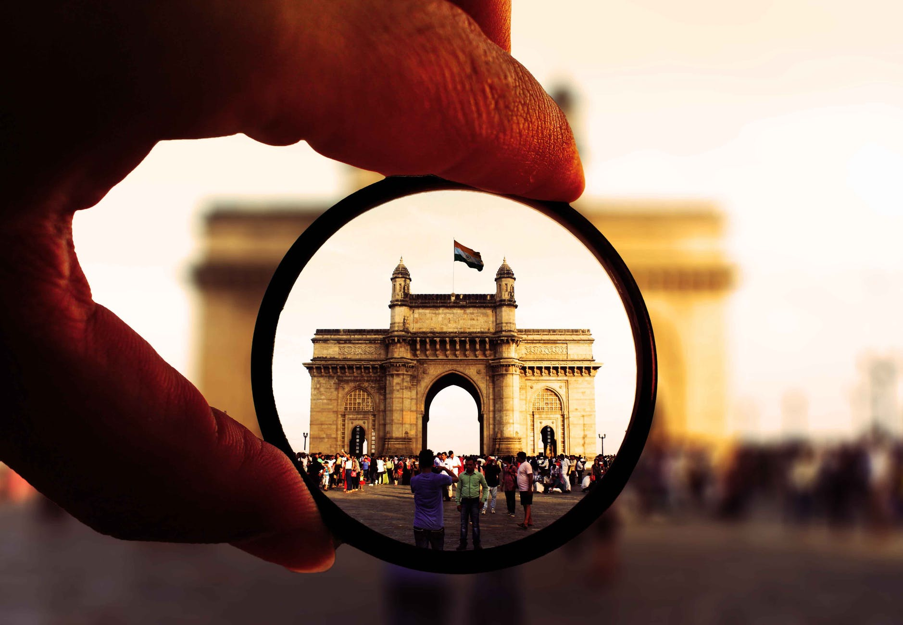

TOP RECCOMENDATIONS


Be a relaxer in between hustlers
Marvels await you
ELEPHANTA CAVES
The Elephanta Caves are located in Western India on Elephanta Island (otherwise known as the Island of Gharapuri), which features two hillocks separated by a narrow valley. The small island is dotted with numerous ancient archaeological remains that are the sole testimonies to its rich cultural past. These archaeological remains reveal evidence of occupation from as early as the 2nd century BC. The rock-cut Elephanta Caves were constructed about the mid-5th to 6th centuries AD. The most important among the caves is the great Cave 1, which measures 39 metres from the front entrance to the back. In plan, this cave in the western hill closely resembles Dumar Lena cave at Ellora, in India. The main body of the cave, excluding the porticos on the three open sides and the back aisle, is 27 metres square and is supported by rows of six columns each. The 7-metre-high masterpiece “Sadashiva” dominates the entrance to Cave 1. The sculpture represents three aspects of Shiva: the Creator, the Preserver, and the Destroyer

SANJAY GANDHI NATIONAL PARK
Sanjay Gandhi National Park, previously known as Borivali National Park in Mumbai is one of the popular picnic spots for locals as well as visitors of the city. The park covers about 20% of Mumbai’s geographical area and invites nature lovers to experience greenery, wildlife, rocky cliffs, caves and a number of tourist attractions located inside the park. With an area of 103 square kilometres, Sanjay Gandhi National Park is one of the largest parks situated within the city limits and is also believed to be one of Asia’s most visited parks. The national park is home to a surprising number of two hundred and fifty-four species of birds, forty species of mammals, seventy-eight species of reptiles and amphibians, about one fifty species of butterflies and over a staggering 1,300 species of plants. The park houses animals like leopards, deer, flying fox, boars along with beautiful birds like butterflies, kingfisher, sunbirds. Inside the forest, there are two artificial lakes. These lakes invite a number of migratory birds every year and also have crocodiles wandering at its shore. Likewise, the park has Kanheri caves inside its premises. Kanheri caves are carved out of rocky cliffs and are over two thousand years old. These caves make for one of the major tourist attractions at Sanjay Gandhi National Park. Landscape wise, the national park offers the best views during the monsoons when the trees are lush green and streams of water flow in full swing. On other days, a cycling tour here is the best way to go around the park and explore the nooks and corners; as walking could bring about restrictions after a certain point.
GATEWAY OF INDIA
The Gateway of India is an arch monument built during the 20th century in Bombay, India. The monument was erected to commemorate the landing of King George V and Queen Mary at Apollo Bunder on their visit to India in 1911. Built in Indo-Saracenic style, the foundation stone for the Gateway of India was laid on 31 March 1911. The structure is an arch made of basalt, 26 metres (85 feet) high. The final design of George Wittet was sanctioned in 1914 and the construction of the monument was completed in 1924. The Gateway was later used as a symbolic ceremonial entrance to India for Viceroys and the new Governors of Bombay. It served to allow entry and access to India. The Gateway of India is located on the waterfront at Apollo Bunder area at the end of Chhatrapati Shivaji Marg in South Mumbai and overlooks the Arabian Sea. The monument has also been referred to as the Taj Mahal of Mumbai, and is the city’s top tourist attraction.